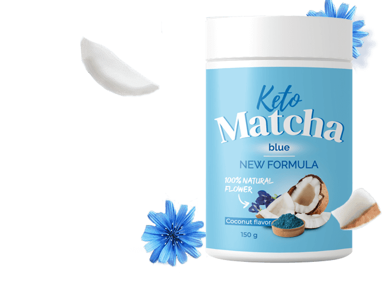
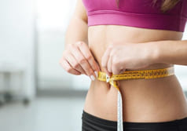

Podstępne węglowodany: Dlaczego tyjemy?

Dodatkowe kilogramy utrudniają życie, ale nie można schudnąć. Po zjedzeniu lunchu chcesz jeść ponownie, sport nie pomaga. Najprawdopodobniej masz zespół metaboliczny (zmniejszona czułość insuliny), twoja dieta jest bogata w węglowodany, a modna dieta Keto jest tylko tym, czego potrzebujesz! Co to jest ta dieta i jak ją znosić, wrócić do normalnej wagi i nie tyć więcej, nasz ekspert żywienia Milena Bruer jest gotowa wyjaśnić.

Nadmierna waga, na którą nie masz wpływu, jest pierwszym znakiem zespołu metabolicznego. W tym stanie ciało traci wrażliwość na insulinę, główny hormon odpowiedzialny za metabolizm tłuszczu (lipid). Tyle insuliny jest produkowane, że ciało nie jest w stanie spalić przechowywanego tłuszczu.
98% diet nie pomaga na zespół metaboliczny. ćwiczenia też. Po prostu zrelaksuj się trochę i zjedz dodatkowy deser, a ty zyskasz wagę jeszcze szybciej.
Dlaczego tak się dzieje?
Powód # 1 - nadmiar węglowodanów w diecie. Nie musisz przejadać się słodyczami i ciastem, aby uzyskać wagę, czasami nawet dodatkowa czekolada spożywana ponad norma może wywołać ten proces. Dlatego nikt nie jest odporny na zespół metaboliczny. Nawet młode dziewczyny, które "jedzą wszystko i nie tyją".
Tak więc jedynym rozwiązaniem dla zespołu metabolicznego jest kompletne lub częściowe odrzucenie węglowodanów.
Jest to zasada modnej diety Keto.jest dobra, ponieważ nie trzeba głodować. Chociaż węglowodany są zabronione, tłuszczowe i białkowe potrawy można spożywać w obfitości.
- mięso
- ryby
- serek wiejski
- jajka
- ser
- orzechy
- warzywa
- oleje roślinne
- płatki
- owoce
- wypieki
- cukier
- makaron
- ziemniaki
- miód
- czekolada
- soki, koktajle
- alkohole
- pokarmy zawierające tłuszcze trans (margaryny, majonez itp)
Znaczenie 98% diety jest zmniejszenie zawartości kalorii diety, z wyłączeniem składu chemicznego żywności i wartości odżywczej. Maksymalnie to pomoże usunąć nadmiar wody lub tymczasowo stracić 2-3 kg.
A tylko dieta Keto eliminuje główną przyczynę otyłości - niewydolność metaboliczna spowodowana nadmiarem węglowodanów.
W warunkach niedoboru węglowodanów organizm wchodzi w ketozę, która jest szczególnym stanem, gdy organizm otrzymuje energię nie z żywności, lecy z własnych rezerw tłuszczu, więc aktywnie tracisz wagę. Głównym źródłem energii są ciała ketonowe: substancje, które są utworzone w wątrobie z pochłoniętymi tłuszczami i tłuszczami w pasie i biodrach. Ketony ciała odżywiają narządów wewnętrznych, mięśni i mózgu zamiast zwykłego cukru i innych węglowodanów.
— zawiera ekstrakt z herbaty matcha, ekstrakt z kokosa i awokado. Aby szybko osiągnąć ketozę i schudnąć, napój jest wzbogacony o białko serwatkowe i ketogeniczny olej MCT.
Z Poziomy węglowodanów spadają wraz z apetytem. A kiedy nie masz ochoty na jedzenie (nawet to owocowe ciasto!), Ketoza ustawia się szybciej, a tłuszcz z talii i bioder odchodzi przed naszymi oczami. I to wszystko - bez krzywdy!
Z , organizm osiąga ketozę w 2-4 dni. Nawet jeśli dieta Keto nie jest zbyt sztywna i możesz sobie pozwolić zjeść słodką rolkę lub przekąskę owocową.
Wysokiej jakości białko zawierające wszystkie niezbędne aminokwasy. Nasyca, pomaga przekształcić tkankę tłuszczową w energię i wspomaga wzrost mięśni.
Tłumi głód, zmniejsza apetyt, usuwa toksyny z organizmu, normalizuje poziom cukru we krwi
Pomaga szybciej dotrzeć do ketozy, zapewnia dodatkową energię, poprawia pamięć i uwagę, poprawia wydajność
Uzupełnia braki witamin i przydatnych mikroelementów
Przyspiesza spalanie kalorii, ułatwia utratę wagi, zmniejsza tkankę tłuszczową, łagodzi pragnienia cukru
W ciągu 2-3 dni od codziennego spożycia Poziom insuliny spada do normy, Zregenerowany jest metabolizm, a zespół metaboliczny ustępuję. Po 2-3 tygodniach waga powraca do normy, brzuch staje się bardziej płaski, biodra i pośladki są smukłe i stonowane.
Od razu gdy trafił do sprzedaży, moi klienci z zespołem metabolicznym go pokochali


Brałem leki psychotropowe - poziom insuliny gwałtownie wzrósł, więc w ciągu niecałego roku moja waga wzrosła o 40 kg. Zacząłem siedzieć na fotelu bujanym przez cały dzień, każdego dnia, absolutnie nic nie robiąc, a mój brzuch szybko rósł. Cały czas chciałem jeść, nie mogłem się powstrzymać ani połknąć hamburgerów przez noc.
Zdałem sobie sprawę, że tak nie może trwać wiecznie. Poszedłem do dietetyka. Poradził mi, żebym poszedł na dietę ketogeniczną, zamiast się poddawać-zacząć pić ten napój.
Musisz go pić każdego dnia, 1 szklankę dziennie. Wlać gorącą wodę, napić się zamiast kawy. Piję go przez 3 miesiące już - 30 kg zniknęło! Będę kontynuował, aż osiągnąłem 75 kg.

Klimakterium minęło, ale problemy się nie skończyły. Zaczęłam zaokrąglać się w talii i ramionach.
Postanowiłam przejść na dietę keto. Ale trudno to wytrzymać "na sucho": dusza po prostu wymaga cukru! Na forum keto polecono mi - napój, który reguluje insulinę i zmniejsza apetyt. mniej niż za miesiąc straciłam ponad 20 kg, 15 cm w talii -jakby nic nie było
Nadal jestem na keto, nigdy tego nie straciłam. I nie chcę niczego zakazanego: z powodu jesz jak ptaszek!


Z powodu głównych chorób (nadciśnienie, problemy z metabolizmem, wzrost insuliny) waga się wzrosła. W styczniu ważyłam 107 kg, a mój wzrost to 1,60.
Teraz ograniczam węglowodany i piję ketogenną herbatę matcha, aby schudnąć. jest kompatybilna z moimi lekami i daje niesamowite rezultaty! W ciągu 3 miesięcy schudłam 35 kilogramów, a nawet odmłodniałam!


Ostatnie artykuły na ten temat
